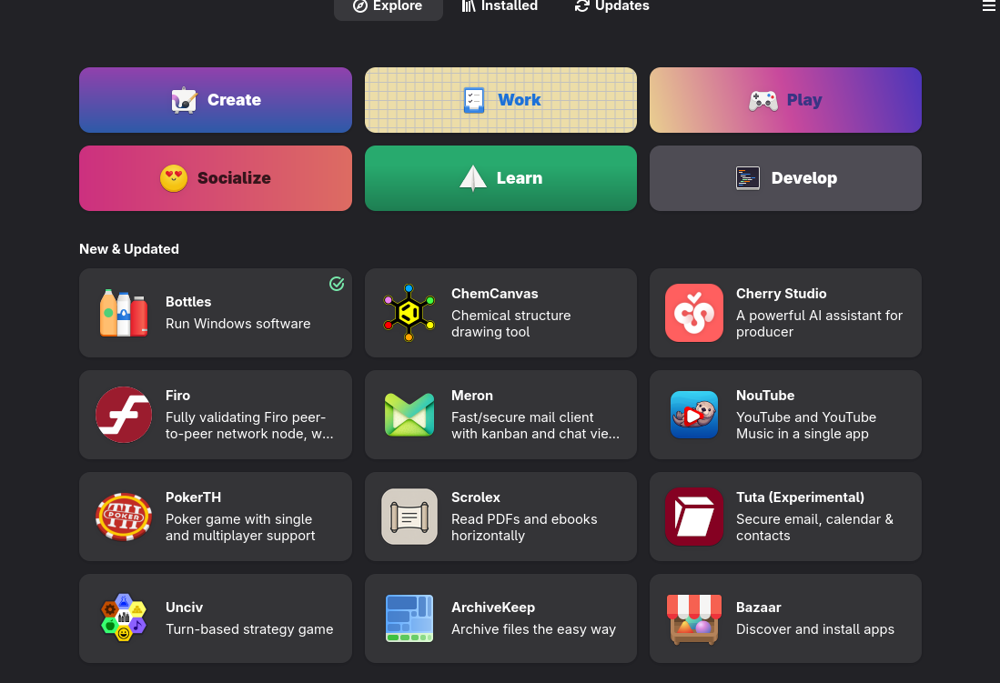

the
cpb-laptops fleet
→ / space next section · ↓ more on this topic · Esc overview · F fullscreen · click the table of contents to jump
environment.systemPackages = with pkgs; [
curl
git
vim
tmux
# add more here
];
$ Please disable speakers on laptops.
nixos-rebuild switch \
--flake ./flake.nix#lenovo \
--target-host root@192.168.1.188
A broken generation is not a broken laptop.
Pick the last good boot from the bootloader, or roll back in place:
nixos-rebuild switch --rollback --target-host root@192.168.1.188
“Works on my machine”
Experiment. The next rebuild restores the declaration.
nix-shell -p inkscape
exit # garbage-collection removes inkscape

GNOME opens as
anon.
with profiles